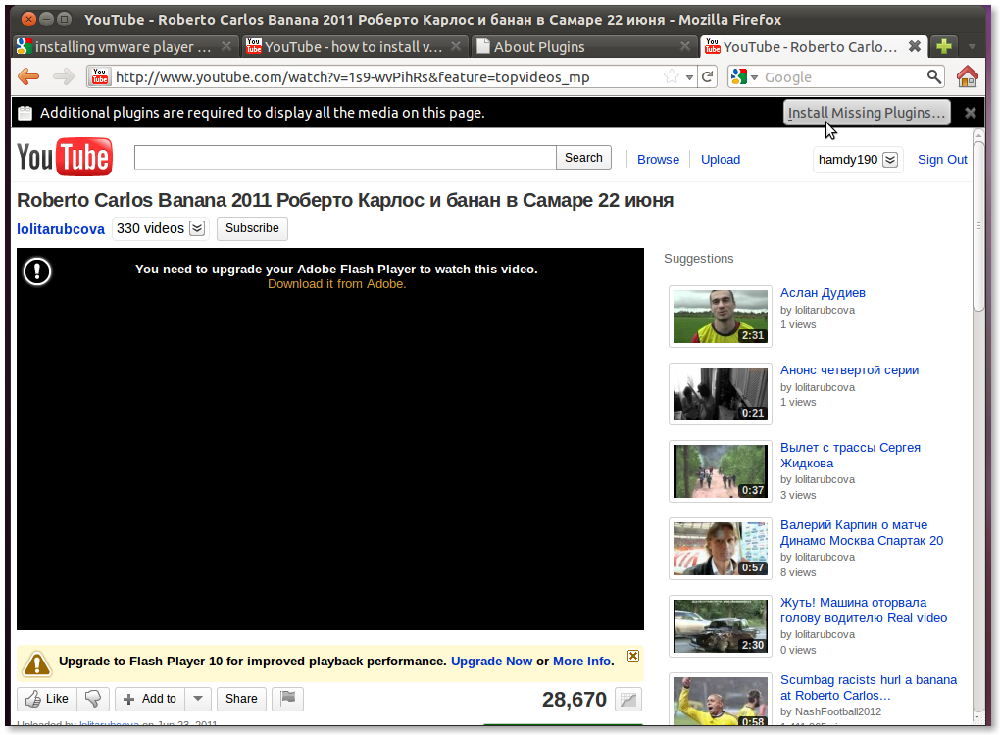

still used for web and console games, cartoons, business apps and more
Slide 1
How did we do animations on the web 20 years ago?
common nominator: Flash
"The use of Flash in websites is a major problem for our community."
Graph for flash slowly dying and image of Safari dropping the support
You will find more statistics at Statista

valid alternative to Flash for delivering multimedia content
videos
audio
games
animations!
Why bother about open web standards?
using the power of consistent standards across browsers and devices using the web
Easy access with class binding and libraries, e.g. animate.css
super-cheap in the browser!
Slide 5
JavaScript
Lots of libraries out there to help with this
show slides with overflowing logos of all the js libraries
jQuery, D3.js, animate.css, velocity (similar to jquery animate or gs), processing.js
Slide 6
Greensock Logo and cool catch slogan
"[...] GSAP is packed with features that make most other engines look like cheap toys".
Tweens
-- code --
Timeline
//instantiate a TimelineLite
var tl = new TimelineLite();
//add a from() tween at the beginning of the timline
tl.from(head, 0.5, {left:100, opacity:0});
//add another tween immediately after
tl.from(subhead, 0.5, {left:-100, opacity:0});
Slide 7
Greensock Timeline Demo with code and working animation
Slide 8
GreenSock Hook into Ember.js - movie slider or scroll slider?!
Slide 9
Processingjs Logo and cool catch slogan
It's not magic, but almost.
Slide 10
Processing js Brain Animation
show how to hook into emberjs as pure js code or if you manage how to precompile the
processing code